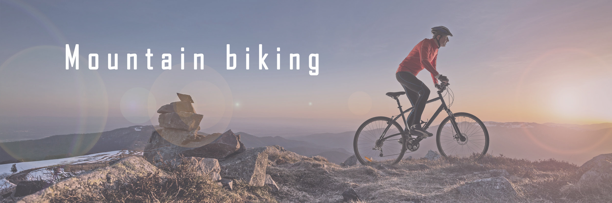
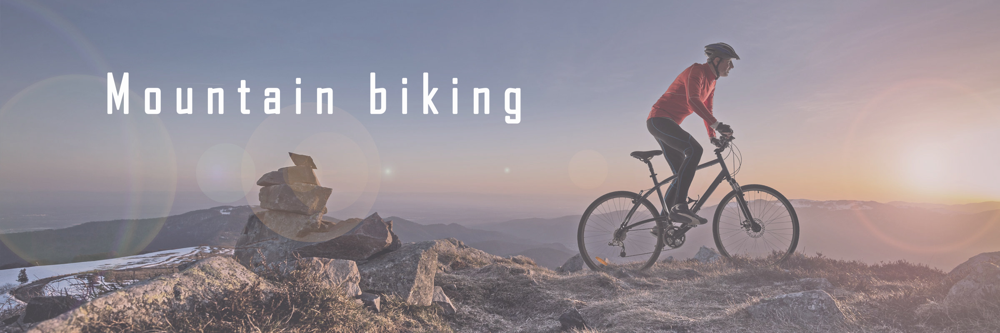

City Routes
The lower half features two rock drops including reef drop which is
the largest rock drop and Highland and. The area is mostly wooded but
there are several places that offer spectacular views. Ride to the top
and then down and link it directly into Ridegeline (with some double
track). I need to learn how to jump! The final chute has a perfect
natural double jump in it to give the extra bit of gnar to make you
feel like a badass.
Mountain Biking
Trail is in good shape, minus dirt bikers dusting it up some. The area
can be accessed from the end of Densmore's Lane, the end of Old Petty
Harbour Road and from Huntingdale Drive. From Lake Imaging Road it is
a steady but not steep climb to the high point just before the
intersection with Hooker Creek Trail. Freeze-thaw cycle isn't awful,
but does make this trail rather slick. The trail has good flow with
some spicy sections.
Family Fun
From here the trail narrows and skirts a rocky hillside. Sign is
posted at entrance to warn users of features. The trails all run
parallel to the Fountain Place paved road so they can be shuttled by
car. The area can be accessed from the end of Densmore's Lane, the end
of Old Petty Harbour Road and from Huntingdale Drive. The climb to the
top ends with a beautiful vista of Twin Lakes and the surrounding
area.
 
